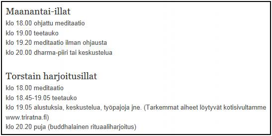

USKONTOOPPIMATERIAALIA NETISSÄ VUODESTA 1999 LÄHTIENPSYKOLOGIAN PIKALINKIT PSYKAN VIDEOABIKURSSI: PS7 ABI KERTAUSKURSSI (OPS 2016-): PS1 Psyykkinen toiminta ja oppiminen PS2 Kehittyvä ihminen PS3 Tietoa käsittelevä ihminen PS4 Tunteet, psyykkinen hyvinvointi ja mielenterveys PS5 Yksilöllinen ja yhteisöllinen ihminen Uskonto: UE1 UE2 UE3 UE4 UE5 UE6 Filosofia: FI1 FI2 FI3 FI4 FI5  Kuvan Buddhan patsas istuu kotonani lasivitriinissä. Siddhartha Gautama, joka eli n. 500 e.Kr. synnytti yhden suurista maailmanuskonnoista, jossa ei uskota jumaliin, vaan jälleensyntymisten jatkuvaan kiertoon. Siddhartha oivalsi kultaisen keskitien opin oltuaan 5 vuotta askeetikkona ja kuultuaan joella soitonopettajan opettavan oppilastaan sitarin virittämisessä: "Jos kiristät kieltä liikaa, se katkeaa. Jos jätät sen liian löysäksi, se ei soi". Siddhartha oli jo luopunut "löysästä" rikkaasta ja helposta elämästä, mutta nyt hän luopui myös "kireästä" askeesista ja siirtyi etsimään totuutta munkkiuden avulla. Hän löysi totuuden bodhipuun alla mietiskellessään ja saavutti nirvanan, ja jäi sitten opettamaan oppiaan (dhammaa/dharmaa) pelastumisesta kuolemaansa saakka, jolloin hän siirtyi lopullisesti nirvanaan. SUOMEN USKONNOLLINEN KENTTÄ (linkit sivustoni teksteihin): SUURIMPIA: Suomen evankelis-luterilainen kirkko Suomen ortodoksinen kirkko Suomen helluntaiherätys Islam Jehovan todistajat Suomen Vapaakirkko Katolinen kirkko Suomessa Suomen Adventtikirkko Mormonit MUITA KRISTILLISIÄ OSIN RYHMITELTYNÄ: Pelastusarmeija Anglikaanit Baptismi Metodismi Evankelikaalisia Karismaattisia Muita luterilaisia ja kristillisiä MUITA USKONNOLLISIA YHTEISÖJÄ OSIN RYHMITELTYNÄ: Krist.vaikutteisia Buddhalaisuus Juutalaisuus Hindulaisperäisiä Synkretistisiä Muita |
Buddhalaisuutta Suomessa
Suomen Buddhalainen Unioni (yhdistää suomalaista buddhalaista)
Bodhidharma ry. Buddhalainen Dharmakeskus Finnish-Thai Buddhist Association ry Helsinki Zen-Center Nirodha Ry. Suomalais-Tiibetiläinen Kulttuuriseura Shin-buddhalaisuus Buddhanet.net (engl.)
- Suomessa ensi vaikutteita teosofian piiristä mm. Pekka Ervast, joka käänsi suomeksi Olcottin Buddhalaisen katekismuksen ja buddhalaisuuden kanonisen Dhammapada-kirjan. 
- hyvän kuvan toiminnasta antaa oheinen Triratna -yhteisön sivulta (2012) otettu Print Screen keskuksen ohjelmasta- kirjasto ja kirjamyyntiä Sutta-kirjakaupasta - retriittikeskus Abhayaloka Läyliäisissä (Abhaya tarkoittaa pelottomuutta, Loka paikkaa eli Abhayaloka on Pelottomuuden paikka. - Suomen buddhalaisia yhdistää Suomen Buddhalainen Unioni - unionin puheenjohtaja on Mikko Koponen - Suomen vanhin buddhalainen yhteisö on Bodhidharma Ry. joka vastaa vuonna 1947 perustettua Buddhismin ystäviä. - pääopettajana toimii Tae Hye sunim, joka on syntyperältään suomalainen (Mikkelistä). Hän kiinnostui nuorena buddhalaisuudesta ja lähti Thaimaahan harjoittamaan tiukkaa theravadabuddhalaisuutta. Myöhemmin hän siirtyi Japaniin zen-buddhismin pariin ja sieltä Koreaan, jossa hän vuonna 1987 sai täyden munkkivihkimyksen ja nykyisen nimensä. Tae Hye sunim on suomalaissyntyisistä munkeista ainoa ns. vanhempi munkki ja hän on Italian ja Suomen Bodhidharma-yhdistysten henkinen opas. - Bodhidharma ry:n toimintaan kuuluu zen- ja metta-mietiskely (metta tarkoittaa "lempeyttä") "henkisen ystävyyden ilmapiirissä" - kyseessä on ns. korealainen hiljaisen mietiskelyn traditio - yhdistykseen kuuluu 50 jäsentä - Buddhalainen Dharmakeskus perustettiin vuonna 1980 ja perustajana oli Maitreya Pekka Airaksinen, rekisteröitiin 1998. - Dharmakeskus harjoittaa kaikkia buddhalaisen perinteen opetuksia - keskeistä toiminnassa on meditaatiokurssien järjestäminen ja heillä onkin retriittikeskus Alastarossa - jäseniä vuonna 2011 oli 41 - Finnish-Thai Buddhist Association ry eli Watbuddharama on suunnattu pitkälti Suomessa asuville thaimaalaisille - kotisivujen kielikin on pääasiassa thaita - kotisivuilla mainitaankin, että Watbuddharama tarjoaa buddhalaisille ja thaimaalaisille ihmisille tietoutta, sekä mahdollisuuden oman uskontonsa ja kulttuurin harjoittamiseen. - perustaja Pranom Heinonen v. 1996 - temppeli Nurmijärvellä - Helsinki Zen Center järjestää 5-6 kertaa viikossa, Helsingin keskustassa, zen-buddhalaiseen traditioon perustuvaa mietiskelyä, zazenia - ERITTÄIN MIELENKIINTOINEN KUVA ZEN CENTERIN KOTISIVUILLA ON ESITYS SUOMALAISTEN BUDDHALAISRYHMIEN TRADITION PERIYTYMISESTÄ. KS. BUDDHALAISTEN RYHMIEN PERIMYSLINJAT SUOMESSA - Nirodha Ry. järjestää meditaatioharjoituksia ja -retriittejä ns. vipassana-meditaatiota. Vipassana on palia ja tarkoittaa suomeksi suunnilleen "asioiden näkemistä selkeästi niin kuin ne ovat". - Suomalais-Tiibetiläinen Kulttuuriseura on vuodesta 1987 asti pyrkinyt lisäämään tiibetiläisyyden tuntemusta Suomessa. Seuralle on totta kai ollut hyvin keskeistä mm. Dalai Laman vierailut Suomessa. |